Kadın ve erkek misafirlerimize
Size özel bir güzellik molası.
Protez tırnak ve nail art, lazer epilasyon, cilt bakımı, ipek kirpik ve vücut bakımı. Hepsi In Mari Sitesi’ndeki stüdyomuzda.
4,9 Google’da 100 yorumHer gün 10.00–22.00
Hizmetlerimiz
Bir başlık seçin, o alandaki uygulamaları görün. Fiyat ve uygunluk için WhatsApp’tan yazabilirsiniz.
- Protez tırnakTırnak yatağınıza göre şekillendirilen, kişiye özel tasarım.
- Nail artSade bir french’ten çizim tasarımlara kadar.
- Jel tırnak ve kalıcı ojeGünlük kullanımda uzun süre bakımlı görünüm.
- Manikür ve pedikürHijyen kurallarına uygun, özenli bakım.
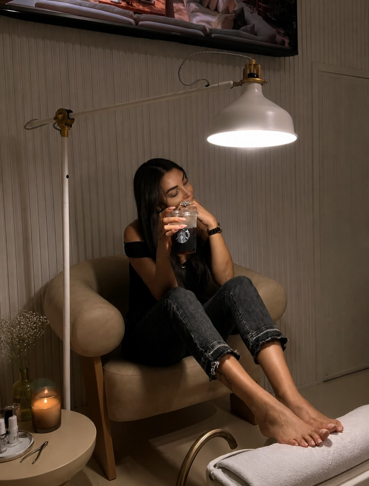
- Alby Cold Diode lazerSoğutmalı başlıkla konforlu lazer epilasyon.
- Yaz aylarında daCihaz ve cilt değerlendirmesine göre yaz aylarında da uygulanabiliyor.
- Kadın ve erkekSeans planı cilt ve kıl yapınıza göre birlikte çıkarılır.
- HydrafacialCildi temizleyen ve nemlendiren bakım.
- Pumpkin cilt bakımıCildi arındırmaya ve ölü derilerden temizlemeye yardımcı olur.
- High FrequencyBakım rutinini destekleyen, bakım sonrası ferahlık veren uygulama.
- Profesyonel cilt bakımıCilt tipinize göre seçilen ürünlerle.
- İpek kirpikSiyah ya da kahverengi, doğal ya da yoğun görünüm.
- MicrobladingKıl tekniğiyle doğal görünümlü, kalıcı kaş.
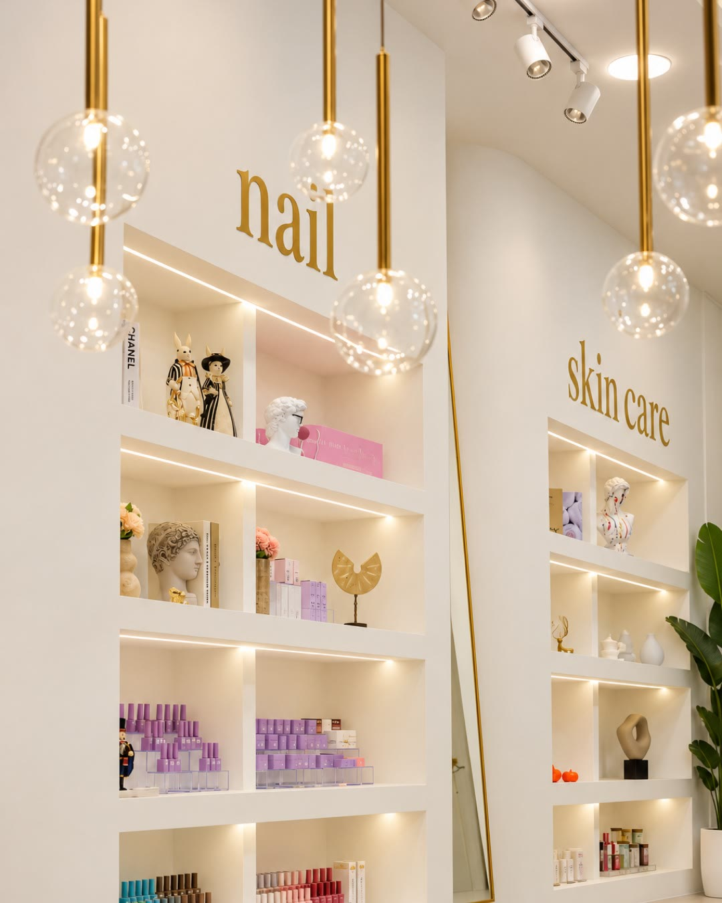
- G5 masajıRitmik masaj hareketleriyle vücut bakımına destek.
- Bölgesel incelmeDüzenli seanslarla bölgesel bakım süreci.
- Saten vücut germeDaha sıkı ve pürüzsüz görünen bir cilt için.
- SolaryumBronz bir görünüm için.
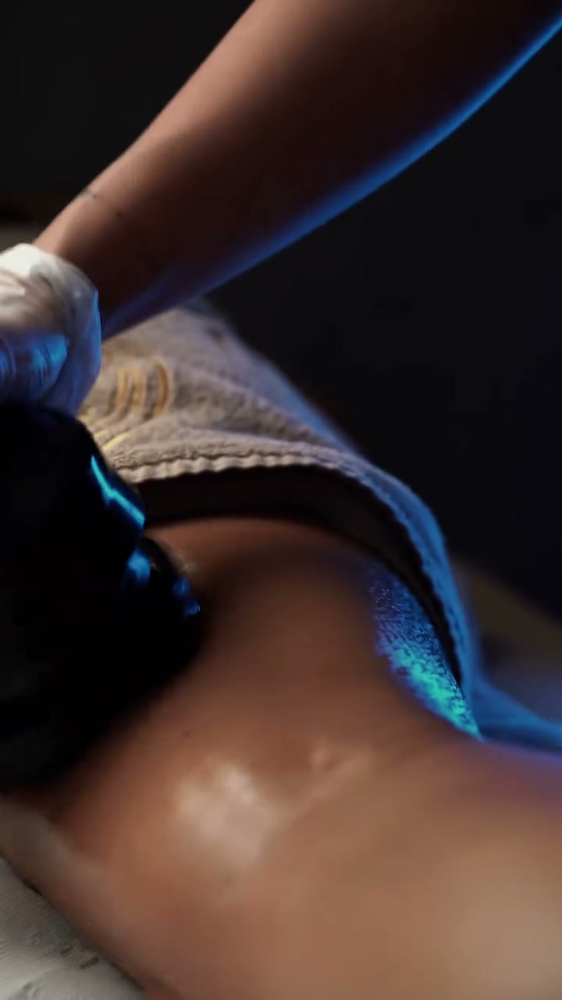
Hakkımızda
Gia Marin Beauty Studio, Beylikdüzü Marmara Mahallesi’nde, In Mari Sitesi’nde. Kadın ve erkek misafirlerine tırnaktan lazere, cilt bakımından vücut bakımına kadar pek çok hizmeti tek adreste sunuyor.
Yorumlarda en çok hijyen ve güler yüz konuşuluyor. Ekibimizden birkaç isim misafirlerimizin dilinden:
- Nil Hanım, tırnak ve nail art
- Fehime Hanım, protez tırnak
- Aleyna Hanım, lazer
- Begüm ve Gaye Hanım, karşılama
- 4,9Google puanı
- 100Google yorumu
- 7 günHer gün açık
- 22.00Akşam kapanış
Tırnak tasarımlarından
Hepsi stüdyomuzda yapıldı.
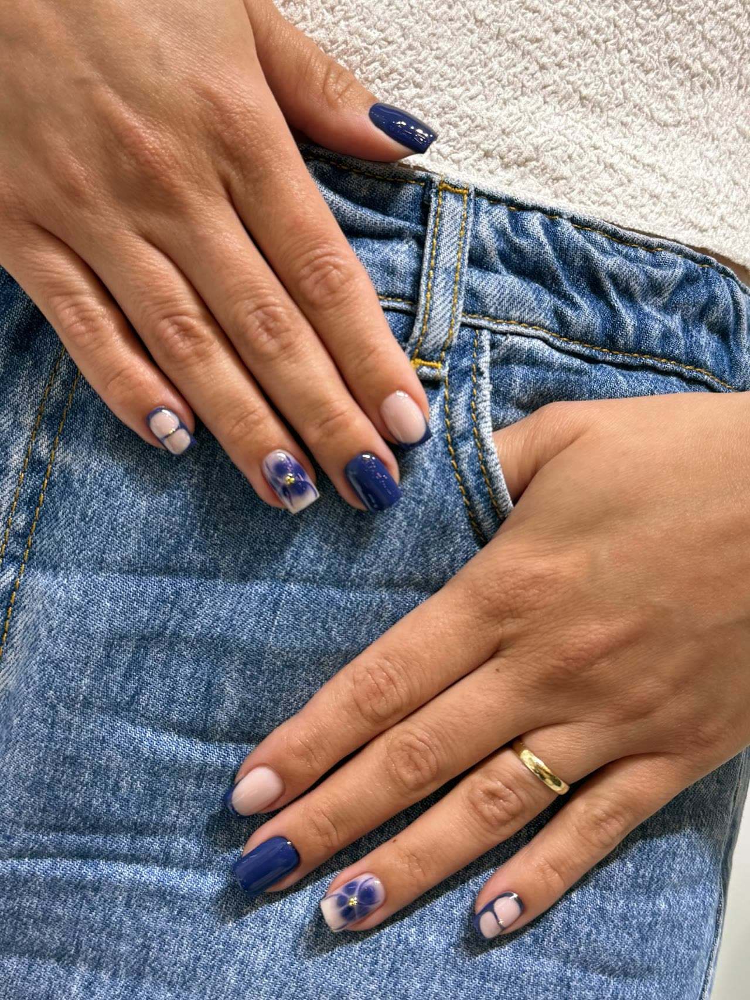
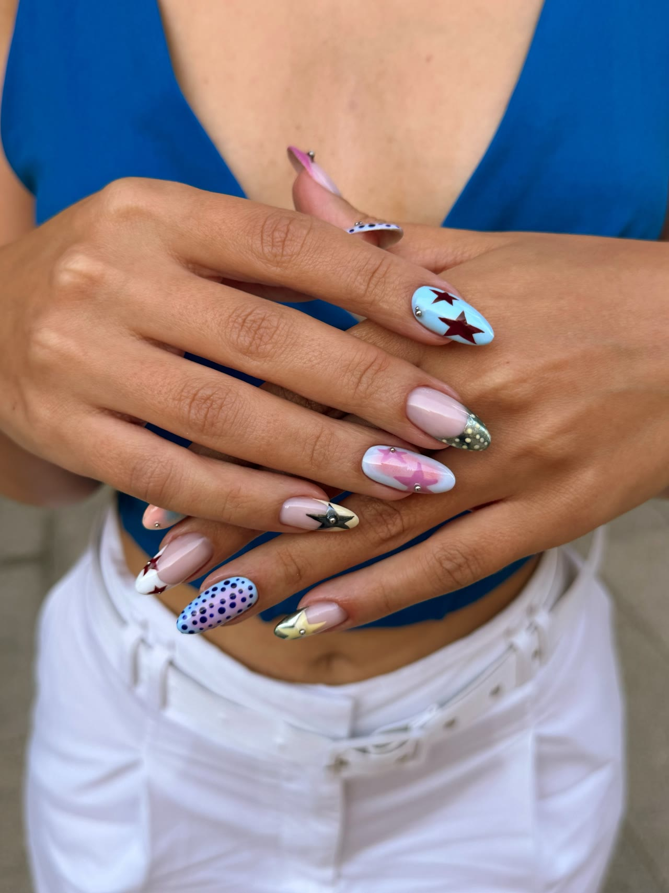
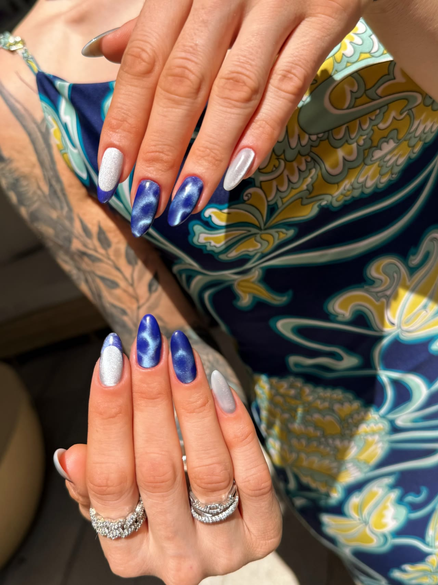
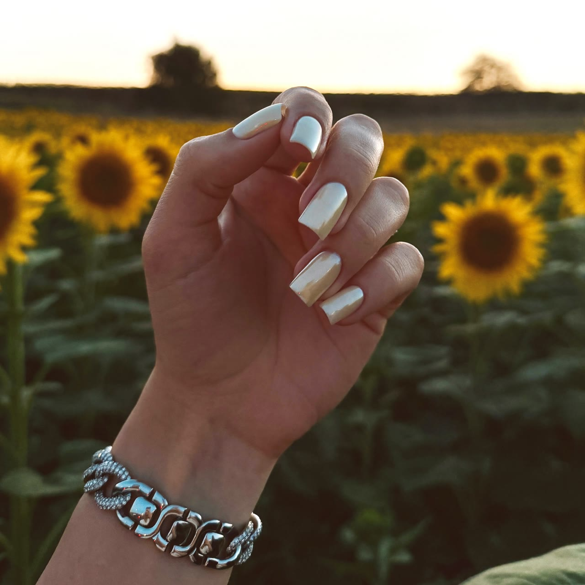
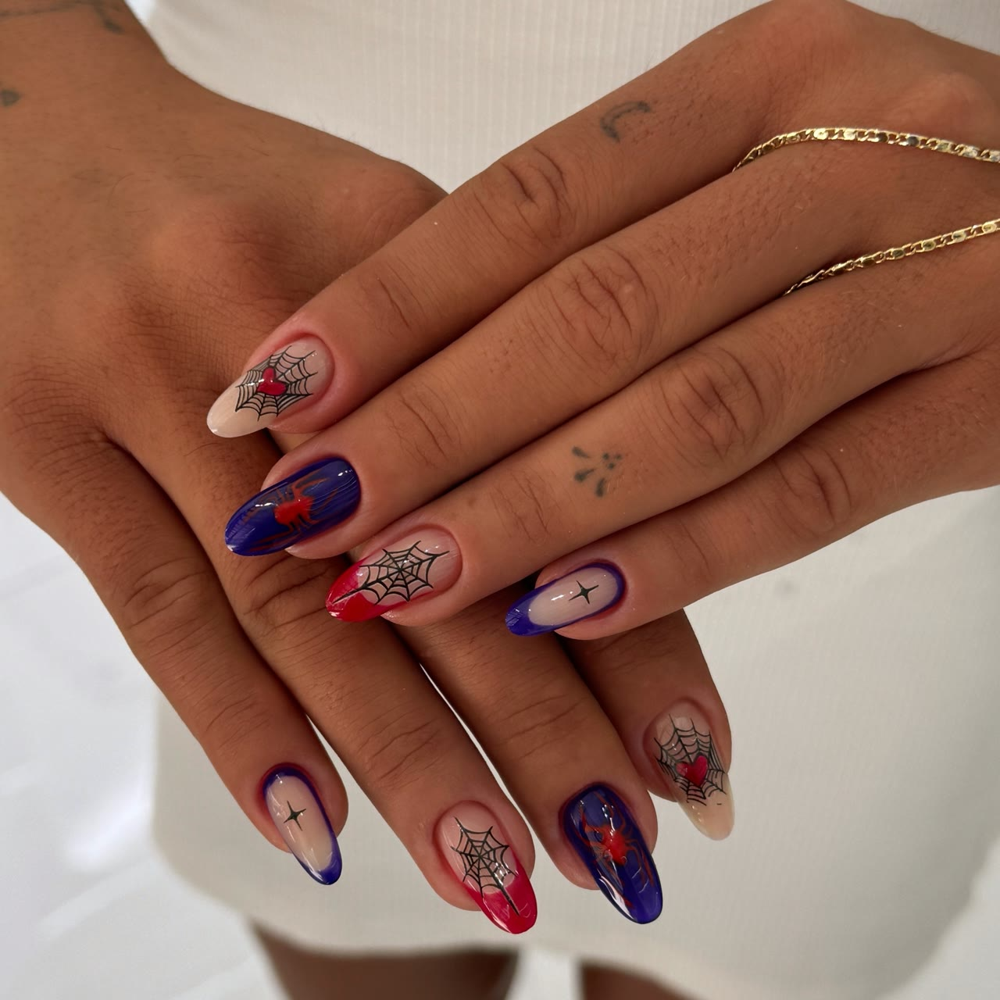
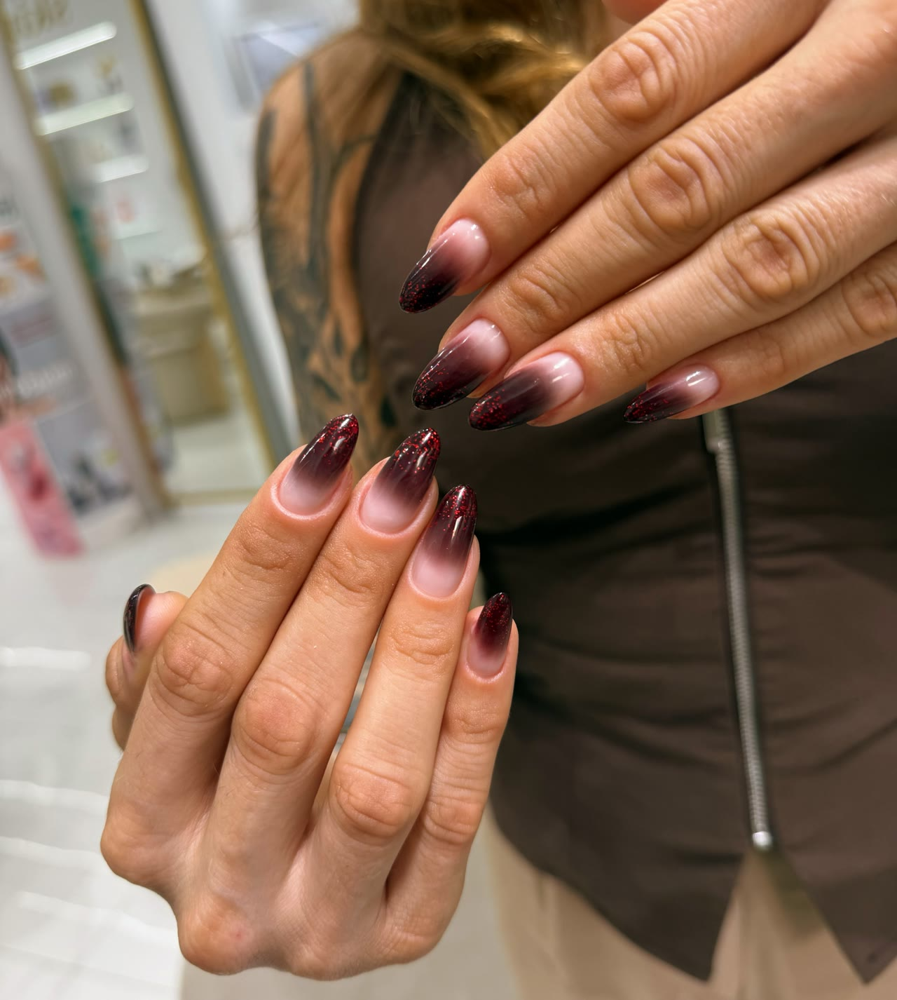
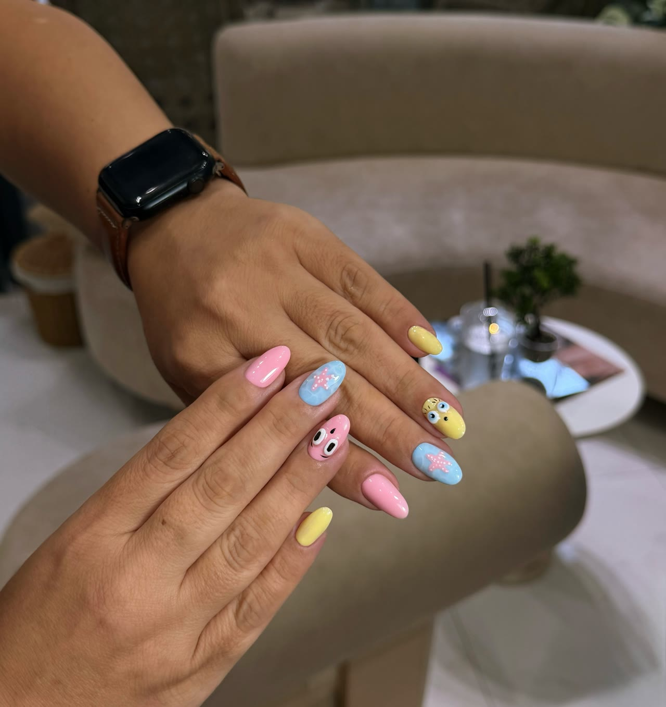
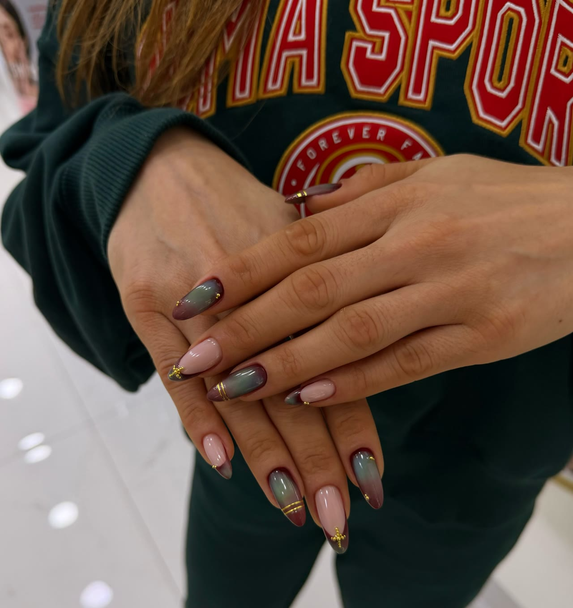
Misafirlerimiz ne diyor?
4,9Google’da 100 yorum
Tırnak yataklarım normalde çok dar ve çoğu işletme istediğim formda yapamıyordu. İncecik ve dar tırnak yatağıma uygun en güzel tırnağı çıkartıyorlar. Nail art işlemleri muazzam, insan çiziyor resmen Nil Hanım.
İpek kirpik, manikür, pedikür ve kalıcı oje işlemlerimin tamamını Nil Hanım yaptı ve her seferinde aynı özen, titizlik, hijyen ve profesyonellikle çalıştı.
Ortam tertemiz ve çok rahat. Gaye Hanım ve Begüm Hanım danışanlarla tek tek ilgilenip ne istediğini anlamaya çalışıyorlar. Lazer için de burayı tercih ediyorum, Aleyna Hanım işinde çok uzman.
Randevu ve iletişim
- Adres
- Marmara Mah. Avrasya Cad. In Mari Sitesi B Blok No: 17 D: 2N, Beylikdüzü
- Açık
- Her gün 10.00–22.00
- Telefon ve WhatsApp
- 0553 717 69 97